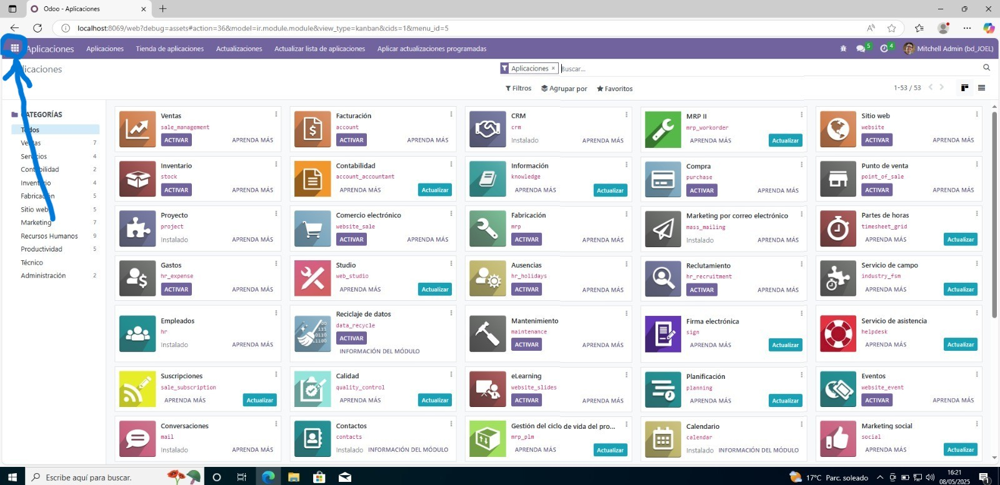
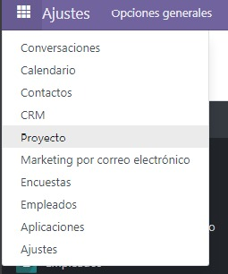
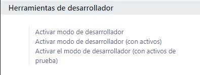
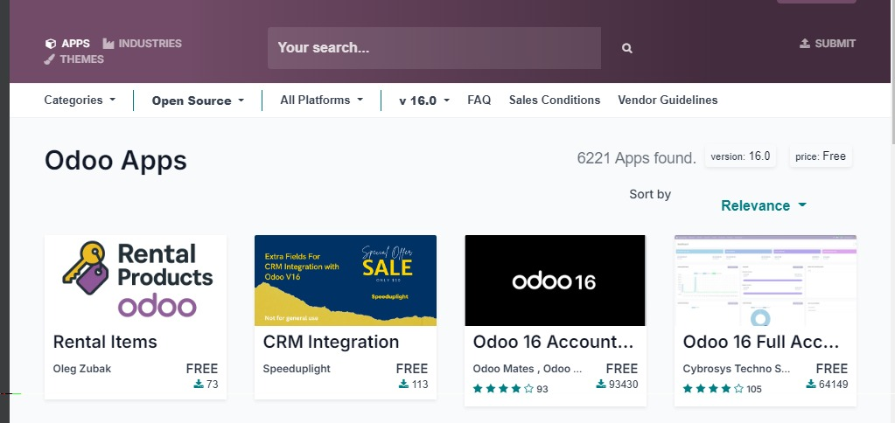
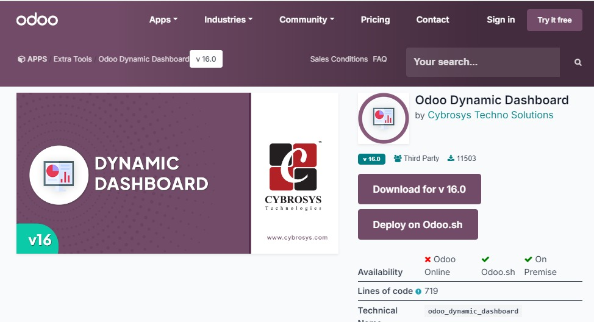
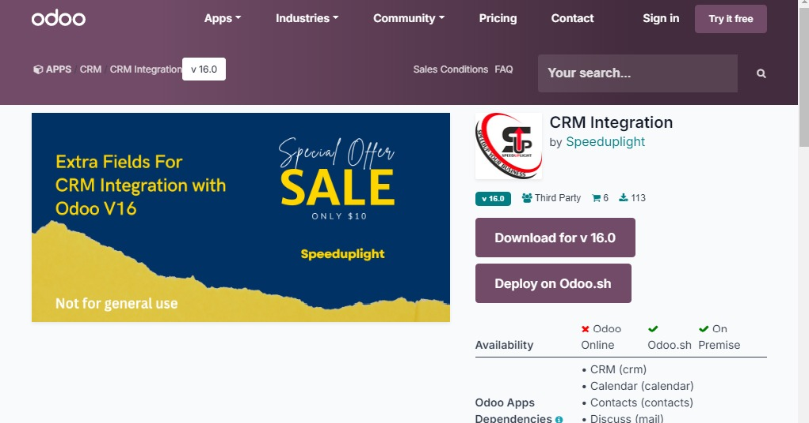
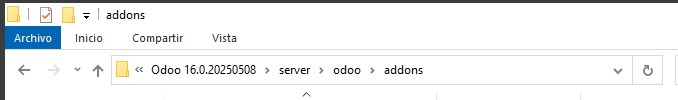
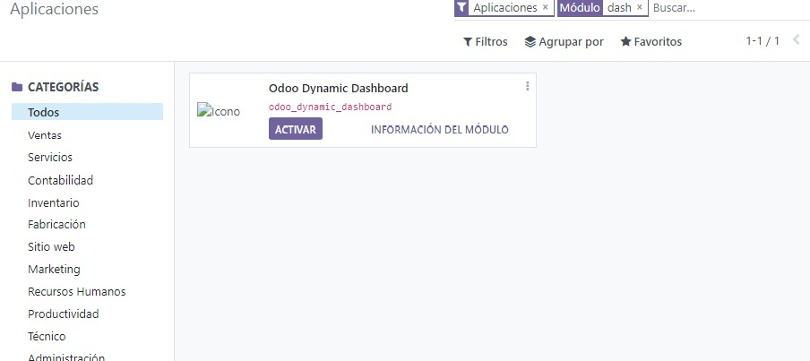
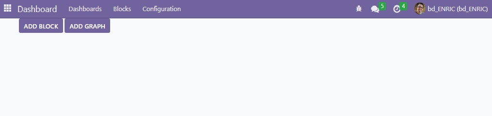

Para instalar modulos en ODOO 16 tenemos que seguir los siguientes pasos, estan muy bien detallados asi que tiene que ser bastante sencillo de seguir.
Abrimos el desplegable de arriba a la izquierda
Una vez abierto el desplegable entramos en ajustes
Buscamos en ajustes el apartado "Herramientas de desarrollador" y activamos la opción "Activar modo desarrollador (modo activo)"
Entramos en la web oficial de Odoo y buscamos un modulo compatible con la version 16 para poder instalar
Una vez elegido el módulo que queremos añadir lo descargamos para la version 16
El modulo que ha escogido Enric tiene las siguientes funcionalidades:
-
Creación de dashboards dinámicos: puedes diseñar tableros personalizados con gráficos, tablas y KPIs según tus necesidades empresariales.
-
Visualización intuitiva de datos: permite mostrar datos clave de distintos módulos (ventas, inventario, compras, etc.) de forma visual y centralizada.
-
Widgets personalizables: incluye componentes visuales como gráficos de barras, líneas, pastel, tarjetas de resumen, entre otros.

El modulo que ha escogido Joel tiene las siguientes funcionalidades:
-
Integración avanzada con CRM: Conecta y sincroniza datos de ventas, clientes y oportunidades entre el módulo de SALE y el CRM de Odoo para una gestión comercial unificada.
-
Gestión de promociones y descuentos: Permite configurar ofertas especiales, descuentos por volumen o condiciones comerciales personalizadas directamente desde el módulo de ventas (SALE).
-
Seguimiento de oportunidades de venta: Facilita el monitoreo de etapas del funnel de ventas, desde lead hasta cierre, integrando automáticamente los datos con el módulo CRM.
Guardamos el módulo en esta ruta
Una vez guardado el módulo lo buscamos en las aplicaciones de nuestro Odoo y lo activamos
Una vez el módulo ya este instalado refrescamos nuestro Odoo y debería aparecer nuestro módulo si todo ha ido correctamente
